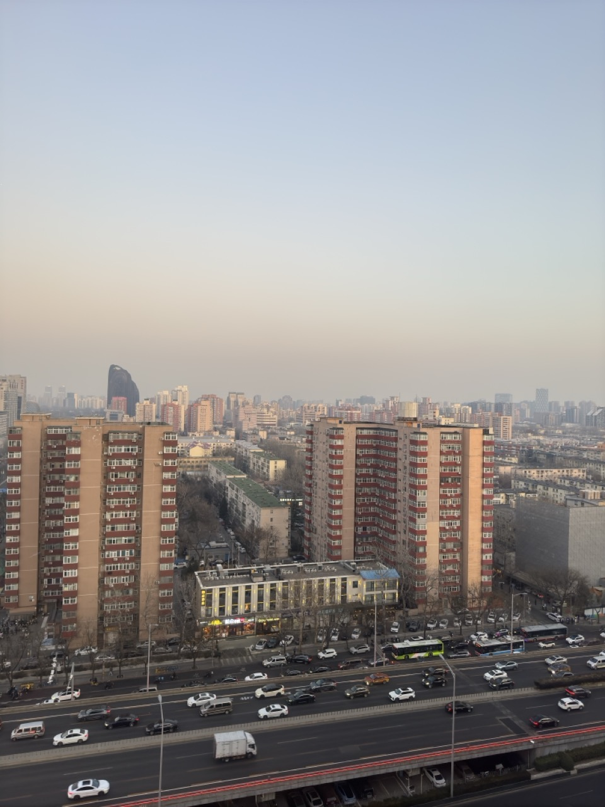
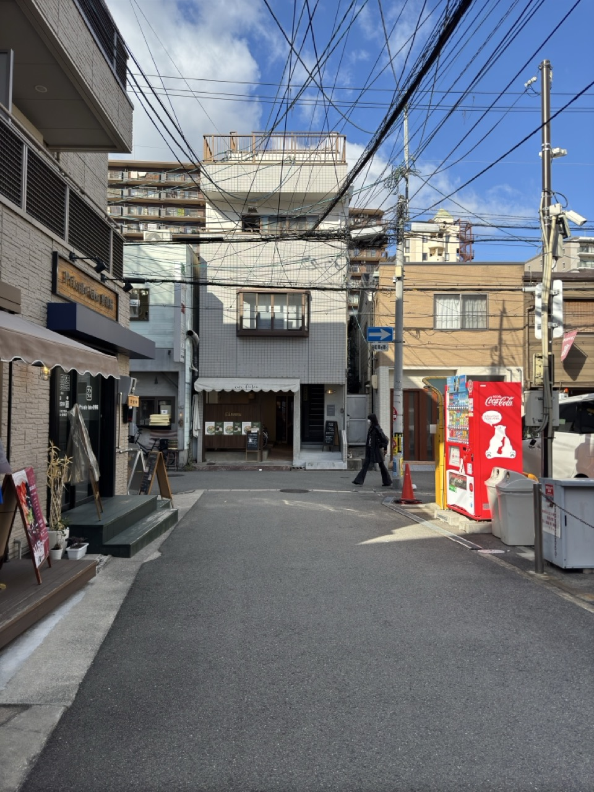
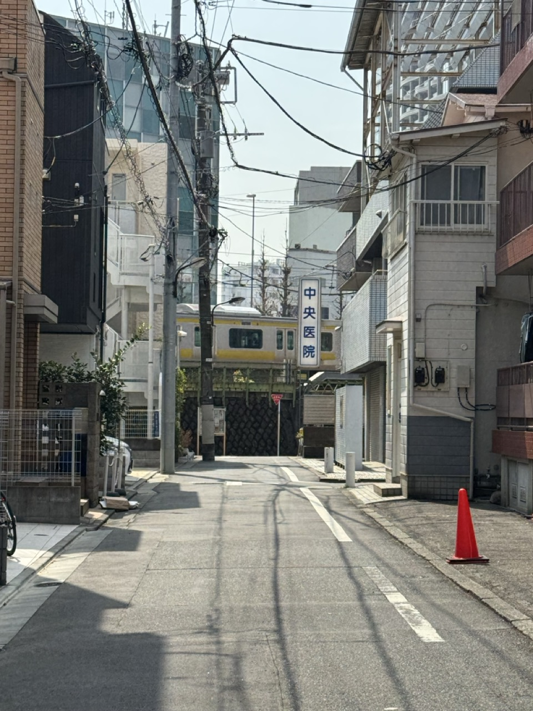
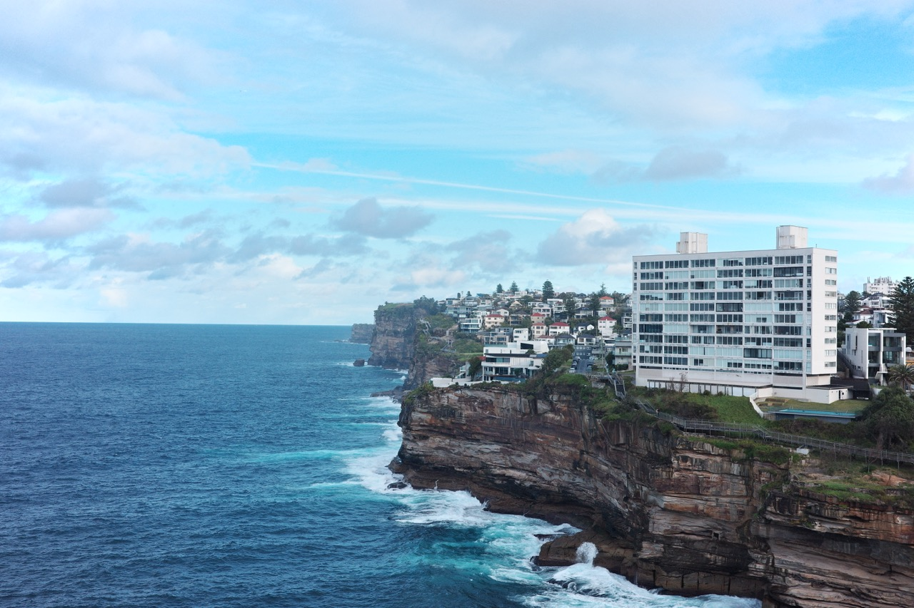
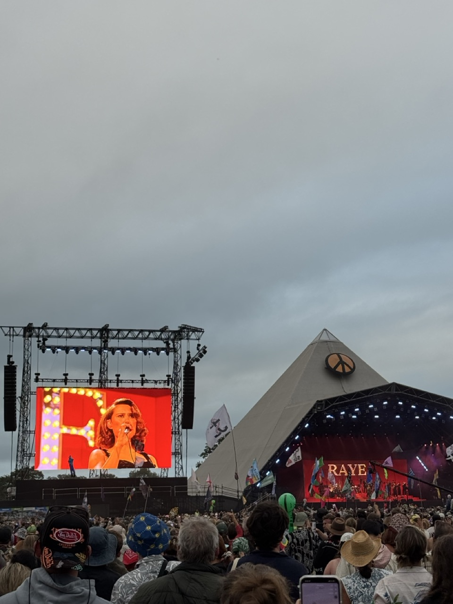
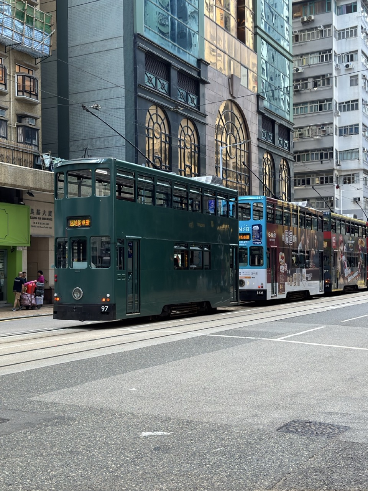
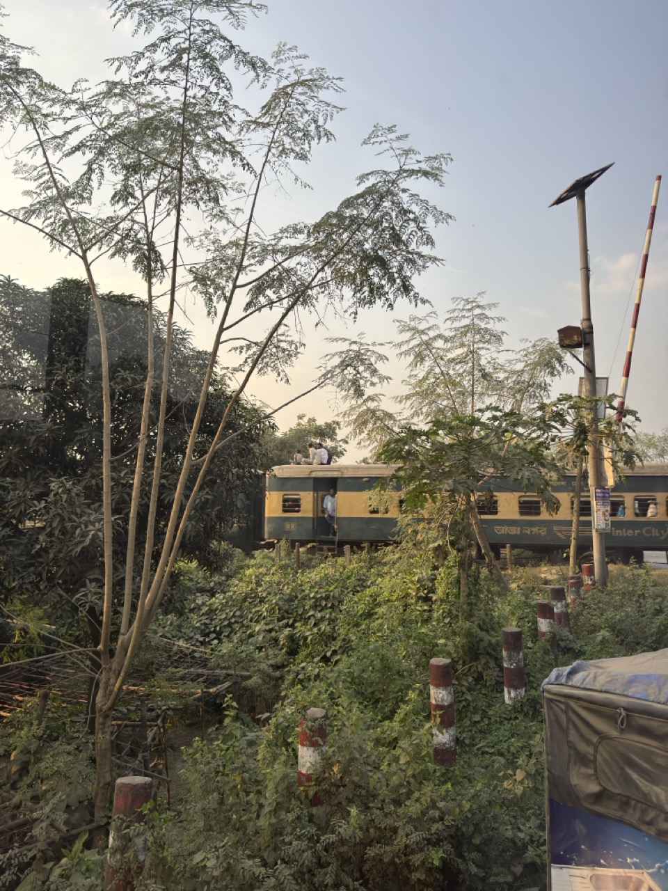

Head of Trust and Safety
Zora
Built Trust & Safety from scratch at a crypto-native social platform, tackling new frontiers of harm at the intersection of social and on-chain activity.
Trust & Safety Leader. Based in London.
I'm a tech policy & product leader. I completed my MPA at Columbia University and have spent my career working at the intersection of technology, product, and policy.
My experience spans trust & safety and tech policy across Zora, TikTok, and the Singapore Government.
Outside work I serve on the board of RainbowAsia and enjoy building things. Having lived across Singapore, Hong Kong, New York, and London, I travel often — check out my travel log in the Travel tab.
Last updated June 2026
Built Trust & Safety from scratch at a crypto-native social platform, tackling new frontiers of harm at the intersection of social and on-chain activity.
Shaped product strategy and policy development for comments and interactions for 1B+ users, managing a team of policy analysts.
Previously held policy and strategy roles across the Cyber Security Agency, Ministry of Manpower, and Smart Nation and Digital Government Office. First Government secondee to LinkedIn's Economic Graph team.
English · Mandarin · Cantonese
Condo shuttle timetables buried in PDFs turned into a live countdown. Shows the next bus in both directions.
For when you're staring at a restaurant wine list with no idea what to order. Snap it and get tasting notes, food pairings, and a personalised pick.








